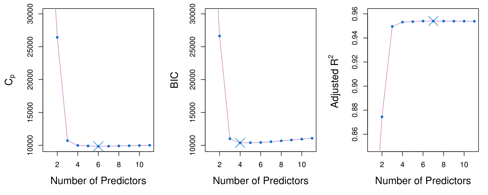
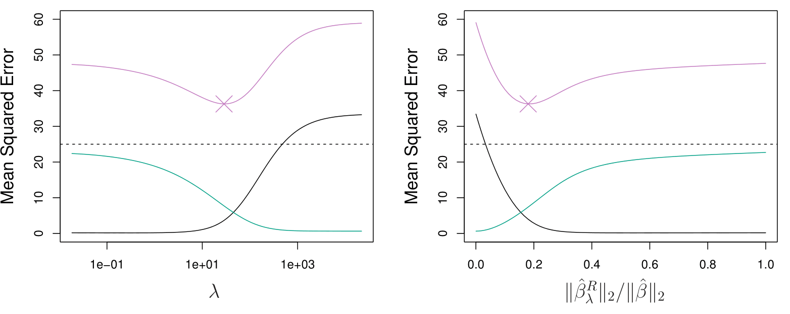
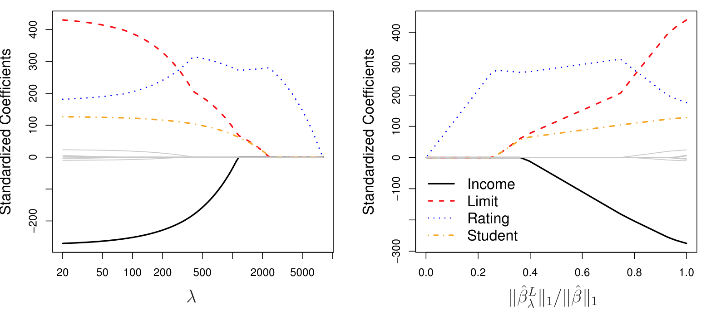
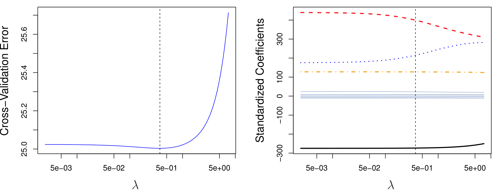

MGMT 47400: Predictive Analytics
Model Selection and Regularization
Overview
- XXXX
- XXX
XXX
Linear Model Selection and Regularization
- Recall the linear model
\[ Y = \beta_0 + \beta_1 X_1 + \cdots + \beta_p X_p + \epsilon. \]
In the lectures that follow, we consider some approaches for extending the linear model framework. In the lectures covering Chapter 7 of the text, we generalize the linear model in order to accommodate non-linear, but still additive, relationships.
In the lectures covering Chapter 8, we consider even more general non-linear models.
In praise of linear models!
Despite its simplicity, the linear model has distinct advantages in terms of its interpretability and often shows good predictive performance.
Hence we discuss in this lecture some ways in which the simple linear model can be improved, by replacing ordinary least squares fitting with some alternative fitting procedures.
Why consider alternatives to least squares?
Prediction Accuracy: especially when \(p > n\), to control the variance.
Model Interpretability: By removing irrelevant features — that is, by setting the corresponding coefficient estimates to zero — we can obtain a model that is more easily interpreted. We will present some approaches for automatically performing feature selection.
Three classes of methods
Subset Selection. We identify a subset of the \(p\) predictors that we believe to be related to the response. We then fit a model using least squares on the reduced set of variables.
Shrinkage. We fit a model involving all \(p\) predictors, but the estimated coefficients are shrunken towards zero relative to the least squares estimates. This shrinkage (also known as regularization) has the effect of reducing variance and can also perform variable selection.
Dimension Reduction. We project the \(p\) predictors into a \(M\)-dimensional subspace, where \(M < p\). This is achieved by computing \(M\) different linear combinations, or projections, of the variables. Then these \(M\) projections are used as predictors to fit a linear regression model by least squares.
Subset Selection
Best subset and stepwise model selection procedures
Best Subset Selection
Let \(\mathcal{M}_0\) denote the null model, which contains no predictors. This model simply predicts the sample mean for each observation.
For \(k = 1, 2, \ldots, p\):
- Fit all \(\binom{p}{k}\) models that contain exactly \(k\) predictors.
- Pick the best among these \(\binom{p}{k}\) models, and call it \(\mathcal{M}_k\). Here best is defined as having the smallest RSS, or equivalently the largest \(R^2\).
Select a single best model from among \(\mathcal{M}_0, \ldots, \mathcal{M}_p\) using cross-validated prediction error, \(C_p\) (AIC), BIC, or adjusted \(R^2\).
Example - Credit data set
For each possible model containing a subset of the ten predictors in the Credit data set, the RSS and \(R^2\) are displayed. The red frontier tracks the best model for a given number of predictors, according to RSS and \(R^2\).
Though the data set contains only ten predictors, the x-axis ranges from 1 to 11, since one of the variables is categorical and takes on three values, leading to the creation of two dummy variables.
Extensions to other models
Although we have presented best subset selection here for least squares regression, the same ideas apply to other types of models, such as logistic regression.
The deviance—negative two times the maximized log-likelihood—plays the role of RSS for a broader class of models.
Stepwise Selection
For computational reasons, best subset selection cannot be applied with very large \(p\). Why not?
Best subset selection may also suffer from statistical problems when \(p\) is large: larger the search space, the higher the chance of finding models that look good on the training data, even though they might not have any predictive power on future data.
Thus an enormous search space can lead to overfitting and high variance of the coefficient estimates.
For both of these reasons, stepwise methods, which explore a far more restricted set of models, are attractive alternatives to best subset selection.
Forward Stepwise Selection
Forward stepwise selection begins with a model containing no predictors, and then adds predictors to the model, one-at-a-time, until all of the predictors are in the model.
In particular, at each step the variable that gives the greatest additional improvement to the fit is added to the model.
In Detail
Forward Stepwise Selection
Let \(\mathcal{M}_0\) denote the null model, which contains no predictors.
For \(k = 0, \ldots, p - 1\):
- 2.1 Consider all \(p - k\) models that augment the predictors in \(\mathcal{M}_k\) with one additional predictor.
- 2.2 Choose the best among these \(p - k\) models, and call it \(\mathcal{M}_{k+1}\). Here best is defined as having smallest RSS or highest \(R^2\).
Select a single best model from among \(\mathcal{M}_0, \ldots, \mathcal{M}_p\) using cross-validated prediction error, \(C_p\) (AIC), BIC, or adjusted \(R^2\).
More on Forward Stepwise Selection
Computational advantage over best subset selection is clear.
It is not guaranteed to find the best possible model out of all \(2^p\) models containing subsets of the \(p\) predictors. Why not? Give an example.
Credit data example
| # Variables | Best subset | Forward stepwise |
|---|---|---|
| One | rating | rating |
| Two | rating, income | rating, income |
| Three | rating, income, student | rating, income, student |
| Four | cards, income, student, limit | rating, income, student, limit |
The first four selected models for best subset selection and forward stepwise selection on the Credit data set. The first three models are identical but the fourth models differ.
Backward Stepwise Selection
Like forward stepwise selection, backward stepwise selection provides an efficient alternative to best subset selection.
However, unlike forward stepwise selection, it begins with the full least squares model containing all \(p\) predictors, and then iteratively removes the least useful predictor, one-at-a-time.
Backward Stepwise Selection: details
Backward Stepwise Selection
Let \(\mathcal{M}_p\) denote the full model, which contains all \(p\) predictors.
For \(k = p, p - 1, \ldots, 1\):
- 2.1 Consider all \(k\) models that contain all but one of the predictors in \(\mathcal{M}_k\), for a total of \(k - 1\) predictors.
- 2.2 Choose the best among these \(k\) models, and call it \(\mathcal{M}_{k-1}\). Here best is defined as having smallest RSS or highest \(R^2\).
Select a single best model from among \(\mathcal{M}_0, \ldots, \mathcal{M}_p\) using cross-validated prediction error, \(C_p\) (AIC), BIC, or adjusted \(R^2\).
More on Backward Stepwise Selection
Like forward stepwise selection, the backward selection approach searches through only \(1 + p(p+1)/2\) models, and so can be applied in settings where \(p\) is too large to apply best subset selection.
Like forward stepwise selection, backward stepwise selection is not guaranteed to yield the best model containing a subset of the \(p\) predictors.
Backward selection requires that the number of samples \(n\) is larger than the number of variables \(p\) (so that the full model can be fit). In contrast, forward stepwise can be used even when \(n < p\), and so is the only viable subset method when \(p\) is very large.
Choosing the Optimal Model
The model containing all of the predictors will always have the smallest RSS and the largest \(R^2\), since these quantities are related to the training error.
We wish to choose a model with low test error, not a model with low training error. Recall that training error is usually a poor estimate of test error.
Therefore, RSS and \(R^2\) are not suitable for selecting the best model among a collection of models with different numbers of predictors.
Estimating test error: two approaches
We can indirectly estimate test error by making an adjustment to the training error to account for the bias due to overfitting.
We can directly estimate the test error, using either a validation set approach or a cross-validation approach, as discussed in previous lectures.
We illustrate both approaches next.
\(C_p\), AIC, BIC, and Adjusted \(R^2\)
These techniques adjust the training error for the model size, and can be used to select among a set of models with different numbers of variables.
The next figure displays \(C_p\), BIC, and adjusted \(R^2\) for the best model of each size produced by best subset selection on the Credit data set.
Credit data example

Now for some details
- Mallow’s \(C_p\): \[ C_p = \frac{1}{n} (\text{RSS} + 2d\hat{\sigma}^2), \]
where \(d\) is the total # of parameters used and \(\hat{\sigma}^2\) is an estimate of the variance of the error \(\epsilon\) associated with each response measurement.
- The AIC criterion is defined for a large class of models fit by maximum likelihood:
\[ \text{AIC} = -2 \log L + 2 \cdot d, \]
where \(L\) is the maximized value of the likelihood function for the estimated model.
- In the case of the linear model with Gaussian errors, maximum likelihood and least squares are the same thing, and \(C_p\) and AIC are equivalent. Prove this.
Details on BIC
\[ \text{BIC} = \frac{1}{n} \left( \text{RSS} + \log(n)d\hat{\sigma}^2 \right). \]
Like \(C_p\), the BIC will tend to take on a small value for a model with a low test error, and so generally we select the model that has the lowest BIC value.
Notice that BIC replaces the \(2d\hat{\sigma}^2\) used by \(C_p\) with a \(\log(n)d\hat{\sigma}^2\) term, where \(n\) is the number of observations.
Since \(\log n > 2\) for any \(n > 7\), the BIC statistic generally places a heavier penalty on models with many variables, and hence results in the selection of smaller models than \(C_p\).
Adjusted \(R^2\)
- For a least squares model with \(d\) variables, the adjusted \(R^2\) statistic is calculated as \[ \text{Adjusted } R^2 = 1 - \frac{\text{RSS}/(n - d - 1)}{\text{TSS}/(n - 1)}. \]
where TSS is the total sum of squares.
Unlike \(C_p\), AIC, and BIC, for which a small value indicates a model with a low test error, a large value of adjusted \(R^2\) indicates a model with a small test error.
Maximizing the adjusted \(R^2\) is equivalent to minimizing \(\frac{\text{RSS}}{n - d - 1}\). While RSS always decreases as the number of variables in the model increases, \(\frac{\text{RSS}}{n - d - 1}\) may increase or decrease, due to the presence of \(d\) in the denominator.
Unlike the \(R^2\) statistic, the adjusted \(R^2\) statistic pays a price for the inclusion of unnecessary variables in the model.
Validation and Cross-Validation
Each of the procedures returns a sequence of models \(\mathcal{M}_k\) indexed by model size \(k = 0, 1, 2, \ldots\). Our job here is to select \(\hat{k}\). Once selected, we will return model \(\mathcal{M}_{\hat{k}}\).
We compute the validation set error or the cross-validation error for each model \(\mathcal{M}_k\) under consideration, and then select the \(k\) for which the resulting estimated test error is smallest.
This procedure has an advantage relative to AIC, BIC, \(C_p\), and adjusted \(R^2\), in that it provides a direct estimate of the test error, and doesn’t require an estimate of the error variance \(\sigma^2\).
It can also be used in a wider range of model selection tasks, even in cases where it is hard to pinpoint the model degrees of freedom (e.g., the number of predictors in the model) or hard to estimate the error variance \(\sigma^2\).
Credit data example

Details of Previous Figure
The validation errors were calculated by randomly selecting three-quarters of the observations as the training set, and the remainder as the validation set.
The cross-validation errors were computed using \(k = 10\) folds. In this case, the validation and cross-validation methods both result in a six-variable model.
However, all three approaches suggest that the four-, five-, and six-variable models are roughly equivalent in terms of their test errors.
In this setting, we can select a model using the one-standard-error rule. We first calculate the standard error of the estimated test MSE for each model size, and then select the smallest model for which the estimated test error is within one standard error of the lowest point on the curve. What is the rationale for this?
Shrinkage Methods
Ridge regression and Lasso
The subset selection methods use least squares to fit a linear model that contains a subset of the predictors.
As an alternative, we can fit a model containing all \(p\) predictors using a technique that constrains or regularizes the coefficient estimates, or equivalently, that shrinks the coefficient estimates towards zero.
It may not be immediately obvious why such a constraint should improve the fit, but it turns out that shrinking the coefficient estimates can significantly reduce their variance.
Ridge regression
Recall that the least squares fitting procedure estimates \(\beta_0, \beta_1, \ldots, \beta_p\) using the values that minimize \[ \text{RSS} = \sum_{i=1}^n \left( y_i - \beta_0 - \sum_{j=1}^p \beta_j x_{ij} \right)^2. \]
In contrast, the ridge regression coefficient estimates \(\hat{\beta}^R\) are the values that minimize \[ \sum_{i=1}^n \left( y_i - \beta_0 - \sum_{j=1}^p \beta_j x_{ij} \right)^2 + \lambda \sum_{j=1}^p \beta_j^2 = \text{RSS} + \lambda \sum_{j=1}^p \beta_j^2, \] where \(\lambda \geq 0\) is a tuning parameter, to be determined separately.
Ridge regression: continued
As with least squares, ridge regression seeks coefficient estimates that fit the data well, by making the RSS small.
However, the second term, \(\lambda \sum_j \beta_j^2\), called a shrinkage penalty, is small when \(\beta_1, \ldots, \beta_p\) are close to zero, and so it has the effect of shrinking the estimates of \(\beta_j\) towards zero.
The tuning parameter \(\lambda\) serves to control the relative impact of these two terms on the regression coefficient estimates.
Selecting a good value for \(\lambda\) is critical; cross-validation is used for this.
Credit data example

Details of Previous Figure
In the left-hand panel, each curve corresponds to the ridge regression coefficient estimate for one of the ten variables, plotted as a function of \(\lambda\).
The right-hand panel displays the same ridge coefficient estimates as the left-hand panel, but instead of displaying \(\lambda\) on the \(x\)-axis, we now display \(\|\hat{\beta}_\lambda^R\|_2 / \|\hat{\beta}\|_2\), where \(\hat{\beta}\) denotes the vector of least squares coefficient estimates.
The notation \(\|\beta\|_2\) denotes the \(\ell_2\) norm (pronounced “ell 2”) of a vector, and is defined as \(\|\beta\|_2 = \sqrt{\sum_{j=1}^p \beta_j^2}\).
Ridge Regression: Scaling of Predictors
- The standard least squares coefficient estimates are scale equivariant: multiplying \(X_j\) by a constant \(c\) simply leads to a scaling of the least squares coefficient estimates by a factor of \(1/c\). In other words, regardless of how the \(j\)th predictor is scaled, \(X_j \hat{\beta}_j\) will remain the same.
- In contrast, the ridge regression coefficient estimates can change substantially when multiplying a given predictor by a constant, due to the sum of squared coefficients term in the penalty part of the ridge regression objective function.
- Therefore, it is best to apply ridge regression after standardizing the predictors, using the formula
\[ \tilde{x}_{ij} = \frac{x_{ij}}{\sqrt{\frac{1}{n} \sum_{i=1}^n (x_{ij} - \bar{x}_j)^2}} \]
Why Does Ridge Regression Improve Over Least Squares?
The Bias-Variance Tradeoff

Simulated data with \(n = 50\) observations, \(p = 45\) predictors, all having nonzero coefficients. Squared bias (black), variance (green), and test mean squared error (purple) for the ridge regression predictions on a simulated data set, as a function of \(\lambda\) and \(\|\hat{\beta}_\lambda^R\|_2 / \|\hat{\beta}\|_2\). The horizontal dashed lines indicate the minimum possible MSE. The purple crosses indicate the ridge regression models for which the MSE is smallest.
The Lasso
Ridge regression does have one obvious disadvantage: unlike subset selection, which will generally select models that involve just a subset of the variables, ridge regression will include all \(p\) predictors in the final model.
The Lasso is a relatively recent alternative to ridge regression that overcomes this disadvantage. The lasso coefficients, \(\hat{\beta}^L_\lambda\), minimize the quantity
\[ \sum_{i=1}^n \left( y_i - \beta_0 - \sum_{j=1}^p \beta_j x_{ij} \right)^2 + \lambda \sum_{j=1}^p |\beta_j| = RSS + \lambda \sum_{j=1}^p |\beta_j|. \]
- In statistical parlance, the lasso uses an \(\ell_1\) (pronounced “ell 1”) penalty instead of an \(\ell_2\) penalty. The \(\ell_1\) norm of a coefficient vector \(\beta\) is given by \(\|\beta\|_1 = \sum |\beta_j|\).
The Lasso: Continued
As with ridge regression, the lasso shrinks the coefficient estimates towards zero.
However, in the case of the lasso, the \(\ell_1\) penalty has the effect of forcing some of the coefficient estimates to be exactly equal to zero when the tuning parameter \(\lambda\) is sufficiently large.
Hence, much like best subset selection, the lasso performs variable selection.
We say that the lasso yields sparse models — that is, models that involve only a subset of the variables.
As in ridge regression, selecting a good value of \(\lambda\) for the lasso is critical; cross-validation is again the method of choice.
Example: Credit Dataset

The Variable Selection Property of the Lasso
Why is it that the lasso, unlike ridge regression, results in coefficient estimates that are exactly equal to zero?
One can show that the lasso and ridge regression coefficient estimates solve the problems:
\[ \text{minimize}_{\beta} \sum_{i=1}^{n} \left( y_i - \beta_0 - \sum_{j=1}^{p} \beta_j x_{ij} \right)^2 \quad \text{subject to} \quad \sum_{j=1}^{p} |\beta_j| \leq s \]
and
\[ \text{minimize}_{\beta} \sum_{i=1}^{n} \left( y_i - \beta_0 - \sum_{j=1}^{p} \beta_j x_{ij} \right)^2 \quad \text{subject to} \quad \sum_{j=1}^{p} \beta_j^2 \leq s, \]
respectively.
The Lasso Picture

Comparing the Lasso and Ridge Regression

Left: Plots of squared bias (black), variance (green), and test MSE (purple) for the lasso on simulated data set.
Right: Comparison of squared bias, variance, and test MSE between lasso (solid) and ridge (dashed). Both are plotted against their \(R^2\) on the training data, as a common form of indexing. The crosses in both plots indicate the lasso model for which the MSE is smallest.
Comparing the Lasso and Ridge Regression: continued

Left: Plots of squared bias (black), variance (green), and test MSE (purple) for the lasso. The simulated data, except that now only two predictors are related to the response.
Right: Comparison of squared bias, variance, and test MSE between lasso (solid) and ridge (dashed). Both are plotted against their \(R^2\) on the training data, as a common form of indexing. The crosses in both plots indicate the lasso model for which the MSE is smallest.
Conclusions
- These two examples illustrate that neither ridge regression nor the lasso will universally dominate the other.
- In general, one might expect the lasso to perform better when the response is a function of only a relatively small number of predictors.
- However, the number of predictors that is related to the response is never known a priori for real data sets.
- A technique such as cross-validation can be used in order to determine which approach is better on a particular data set.
Selecting the Tuning Parameter for Ridge Regression and Lasso
- As for subset selection, for ridge regression and lasso we require a method to determine which of the models under consideration is best.
- That is, we require a method selecting a value for the tuning parameter \(\lambda\) or equivalently, the value of the constraint \(s\).
- Cross-validation provides a simple way to tackle this problem. We choose a grid of \(\lambda\) values, and compute the cross-validation error rate for each value of \(\lambda\).
- We then select the tuning parameter value for which the cross-validation error is smallest.
- Finally, the model is re-fit using all of the available observations and the selected value of the tuning parameter.
Credit data example

Left: Cross-validation errors that result from applying ridge regression to the Credit data set with various values of \(\lambda\).

Right: The coefficient estimates as a function of \(\lambda\). The vertical dashed line indicates the value of \(\lambda\) selected by cross-validation.
Simulated data example

Left: Ten-fold cross-validation MSE for the lasso, applied to the sparse simulated data set.
Right: The corresponding lasso coefficient estimates are displayed. The vertical dashed lines indicate the lasso fit for which the cross-validation error is smallest.
Dimension Reduction Methods
The methods that we have discussed so far in this chapter have involved fitting linear regression models, via least squares or a shrunken approach, using the original predictors, \(X_1, X_2, \ldots, X_p\).
We now explore a class of approaches that transform the predictors and then fit a least squares model using the transformed variables. We will refer to these techniques as dimension reduction methods.
Dimension Reduction Methods: Details
Let \(Z_1, Z_2, \ldots, Z_M\) represent \(M < p\) linear combinations of our original \(p\) predictors. That is, \[ Z_m = \sum_{j=1}^p \phi_{mj} X_j \quad \text{(1)} \] for some constants \(\phi_{m1}, \ldots, \phi_{mp}\).
We can then fit the linear regression model, \[ y_i = \theta_0 + \sum_{m=1}^M \theta_m z_{im} + \epsilon_i, \quad i = 1, \ldots, n, \quad \text{(2)} \] using ordinary least squares.
Note that in model (2), the regression coefficients are given by \(\theta_0, \theta_1, \ldots, \theta_M\). If the constants \(\phi_{m1}, \ldots, \phi_{mp}\) are chosen wisely, then such dimension reduction approaches can often outperform OLS regression.
Dimension Reduction Methods: Continued
Notice that from definition (1), \[ \sum_{m=1}^M \theta_m z_{im} = \sum_{m=1}^M \theta_m \sum_{j=1}^p \phi_{mj} x_{ij} = \sum_{j=1}^p \sum_{m=1}^M \theta_m \phi_{mj} x_{ij} = \sum_{j=1}^p \beta_j x_{ij}, \] where \[ \beta_j = \sum_{m=1}^M \theta_m \phi_{mj}. \quad \text{(3)} \]
Hence model (2) can be thought of as a special case of the original linear regression model.
Dimension reduction serves to constrain the estimated \(\beta_j\) coefficients, since now they must take the form (3).
Can win in the bias-variance tradeoff.
Principal Components Regression
- Here we apply principal components analysis (PCA) (discussed in Chapter 10 of the text) to define the linear combinations of the predictors, for use in our regression.
- The first principal component is that (normalized) linear combination of the variables with the largest variance.
- The second principal component has the largest variance, subject to being uncorrelated with the first.
- And so on.
- Hence with many correlated original variables, we replace them with a small set of principal components that capture their joint variation.
Pictures of PCA

The population size (pop) and ad spending (ad) for 100 different cities are shown as purple circles. The green solid line indicates the first principal component, and the blue dashed line indicates the second principal component.
Pictures of PCA: continued

A subset of the advertising data. Left: The first principal component, chosen to minimize the sum of the squared perpendicular distances to each point, is shown in green. These distances are represented using the black dashed line segments. Right: The left-hand panel has been rotated so that the first principal component lies on the x-axis.
Pictures of PCA: continued

Plots of the first principal component scores \(z_{i1}\) versus pop and ad. The relationships are strong.
Pictures of PCA: continued

Plots of the second principal component scores \(z_{i2}\) versus pop and ad. The relationships are weak.
Application to Principal Components Regression

PCR was applied to two simulated data sets. The black, green, and purple lines correspond to squared bias, variance, and test mean squared error, respectively. Left: Simulated data. Right: Simulated data.
Choosing the Number of Directions \(M\)

Left: PCR standardized coefficient estimates on the Credit data set for different values of \(M\).
Right: The 10-fold cross-validation MSE obtained using PCR, as a function of \(M\).
Partial Least Squares
PCR identifies linear combinations, or directions, that best represent the predictors \(X_1, \dots, X_p\).
These directions are identified in an unsupervised way, since the response \(Y\) is not used to help determine the principal component directions.
That is, the response does not supervise the identification of the principal components.
Consequently, PCR suffers from a potentially serious drawback: there is no guarantee that the directions that best explain the predictors will also be the best directions to use for predicting the response.
Partial Least Squares: Continued
Like PCR, PLS is a dimension reduction method, which first identifies a new set of features \(Z_1, \dots, Z_M\) that are linear combinations of the original features, and then fits a linear model via OLS using these \(M\) new features.
But unlike PCR, PLS identifies these new features in a supervised way – that is, it makes use of the response \(Y\) in order to identify new features that not only approximate the old features well, but also that are related to the response.
Roughly speaking, the PLS approach attempts to find directions that help explain both the response and the predictors.
Details of Partial Least Squares
After standardizing the \(p\) predictors, PLS computes the first direction \(Z_1\) by setting each \(\phi_{1j}\) in (1) equal to the coefficient from the simple linear regression of \(Y\) onto \(X_j\).
One can show that this coefficient is proportional to the correlation between \(Y\) and \(X_j\).
Hence, in computing \(Z_1 = \sum_{j=1}^p \phi_{1j} X_j\), PLS places the highest weight on the variables that are most strongly related to the response.
Subsequent directions are found by taking residuals and then repeating the above prescription.
Summary
Research into methods that give sparsity, such as the lasso, is an especially hot area.
Later, we will return to sparsity in more detail, and will describe related approaches such as the elastic net.
Summary
Summary
Model selection methods are an essential tool for data analysis, especially for big datasets involving many predictors.
XXXX
- XXXX